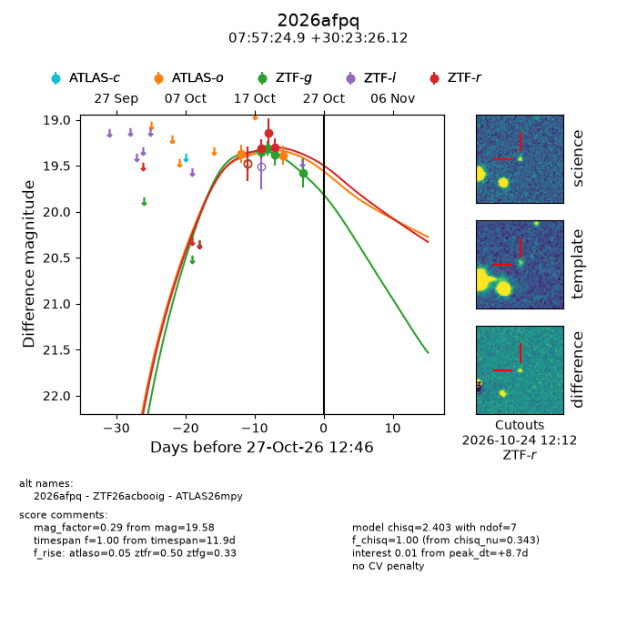
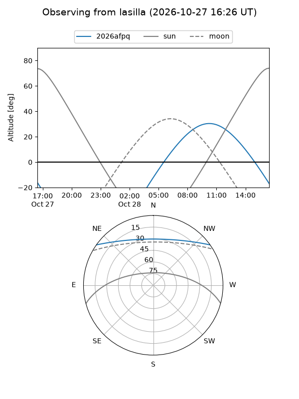
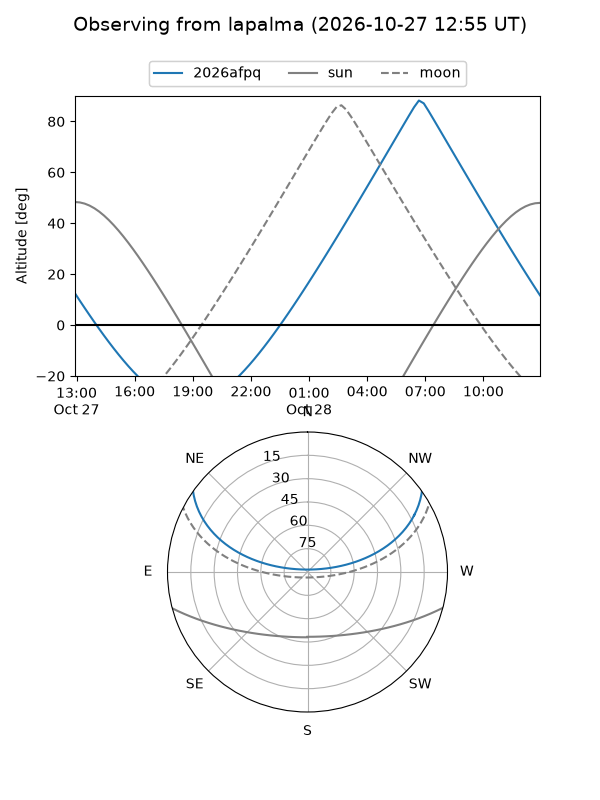
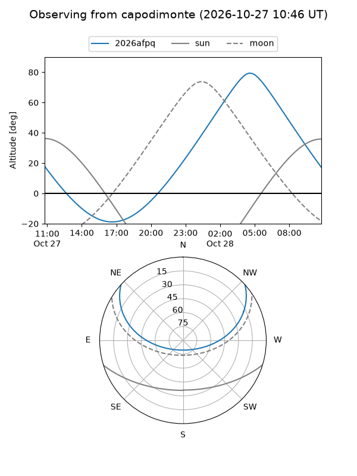
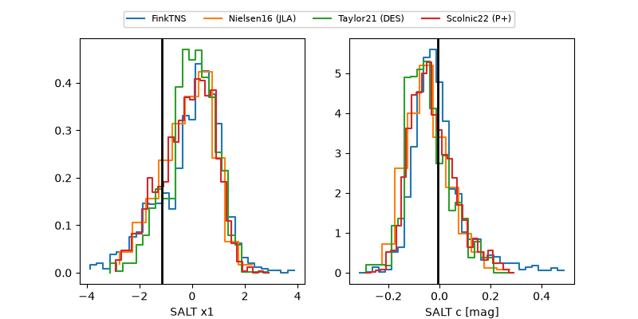

2026afpq
Target 2026afpq at 2026-10-27 12:50
Aliases and brokers:
FINK-ZTF: ztf.fink-portal.org/ZTF26acbooig
Lasair-ZTF: lasair-ztf.lsst.ac.uk/objects/ZTF26acbooig
ALeRCE-ZTF: alerce.online/object/ZTF26acbooig
YSE-PZ: ziggy.ucolick.org/yse/transient_detail/2026afpq
TNS name: wis-tns.org/object/2026afpq
Direct TNS query: direct search
alt names
ZTF26acbooig (ztf,fink_ztf)
2026afpq (tns,yse)
ATLAS26mpy (atlas)
Coordinates:
equatorial (ra, dec) = 119.3539,+30.39059
equatorial (HMS+DMS) = 07:57:24.94,+30:23:26.12
galactic (l, b) = (190.6708,+26.65683)
Flags:
peak dt: +8.7
Photometry:
last atlaso=19.39, ztfg=19.58, ztfr=19.30
2 atlaso, 4 ztfg, 3 ztfr detections
Lightcurve

Visibility



Additional plots
